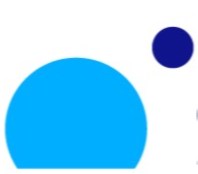

Fiducia is a programming language and toolchain for building verifiably secure systems on the seL4 microkernel. It brings formal verification to everyday developers—no PhD required.
Under active private development. Public release planned for mid-2026.
Fiducia closes the trust gap between the formally verified seL4 kernel and the applications built on top. It catches entire classes of bugs at compile time that would be invisible at runtime.
Describe the global communication protocol once. The compiler projects it into correct local programs for each protection domain—deadlock-free by construction.
A two-level security type system (Low/High) statically enforces that sensitive data never leaks to lower-security domains. No runtime checks needed.
Five well-typedness conditions—unique ownership, paired communication, acyclic channels, and more—guarantee that every well-typed choreography is deadlock-free.
Program protection domain behaviour using communicating sequential processes with events, guarded choice, and channel send/receive—clear, composable, and verifiable.
First-class support for protection domains, shared memory regions, typed channels, and the seL4 Microkit System Description Format. Compile directly to SDF.
A fast, modern compiler built in Rust with rich error diagnostics, LSP integration, and sub-microsecond compilation stages. Includes VS Code support.
A Fiducia project consists of a system declaration (.fis) that defines
the global architecture, and per-domain programs (.fi) that describe
local behaviour. The compiler verifies the whole.
// Memory regions used as channel buffers MemoryRegion eth_outer_output(0x200_000); MemoryRegion eth_inner_input(0x200_000); // Protection domains: (priority, irq, budget, period) ProtectionDomain eth_outer(99, 159, 1000, 100_000); ProtectionDomain eth_inner(199, 155); ProtectionDomain dd(100); // One-way SPSC channels Chan o2d = eth_outer --> dd; o2d.set_buffer(eth_outer_output); Chan d2i = dd --> eth_inner; d2i.set_buffer(eth_inner_input); // System composition System = eth_outer ||| eth_inner ||| dd;
import "ddiode.c" as dd; () : dd.init(); Process: Notified(): o2d?pkt -> d2i!pkt -> Notified();
import "eth.c" as eth; Mapping ring_buffer (0x10_000, rw); Mapping packet_buffer(0x200_000, rw); Events: Event handle_irq: eth.handle_irq(eth) Event restart_engine: eth.restart_engine(eth) Event send_frame: eth.send_frame(pkt) Process: Notified(): irq?159 -> Handle_eth(); Notified();
// Security labels prevent data leaks at compile time High MemoryRegion secret(0x1000); Low MemoryRegion public(0x1000); High Mapping m1(secret, "rw"); // OK: High -> High High Mapping m2(public, "rw"); // OK: Low -> High Low Mapping m3(secret, "rw"); // ERROR: High -> Low leak!
The Fiducia compiler discovers your project files, parses them into a rich AST, validates cross-references and memory layout, checks information flow security, and emits a verified seL4 Microkit System Description.
Where Fiducia fits in the verified stack
We are building a library of verified security design patterns on
seL4—currently implemented in C, these will be converted to
Fiducia .fis and .fi specifications with
compile-time security guarantees.
Enforces strict one-way information flow between HIGH and LOW networks through a trusted intermediary. The diode applies policy checks and audit logging—no data ever flows backwards. Fiducia will verify unidirectionality structurally at compile time.
Routes HID input to one security domain at a time with buffer flush on switch. Keystrokes are delivered exclusively—no broadcast, no residual data leakage between SECRET and UNCLASSIFIED domains.
Inspects clipboard content crossing domain boundaries against a policy (e.g. rejecting "TOP SECRET", "CLASSIFIED" keywords). Only approved content is forwarded, with full audit logging of every decision.
Manages asymmetric email flow between SECRET and OFFICIAL domains. Downgrade: allowed after sanitisation (stripping classified markers). Upgrade: always blocked. The guard enforces the policy, not the user.
Multiple security domains render to isolated framebuffers. A trusted compositor reads all buffers and draws border decorations that cannot be spoofed. Domains cannot read each other's display content.
A probabilistic downgrader that buffers, reorders, and adds timing jitter to messages crossing security boundaries. Defeats timing-based covert channels that simple data diodes leave open.
Zeroes all shared workspace buffers on every domain switch, verified clean before the new domain activates. Prevents covert channels through residual state in shared memory.
Ethernet-level data diode between two full Linux virtual machines running on seL4. Frames flow HIGH→LOW only through a trusted bridge. The VMs are completely isolated by seL4 capabilities.
Strips EXIF, GPS, camera data, and comments from JPEG images crossing a security boundary. Only pixel data passes through. Operates inline between Linux VMs at wire speed.
Fiducia builds on decades of research in choreographic programming, process algebra, and information flow security. Its theoretical foundations are published in peer-reviewed venues.
The first choreographic programming language designed for seL4 MicroKit. Formal operational semantics and a well-typedness discipline that guarantees deadlock freedom for any well-typed choreography. Draft coming to arXiv soon.
Fiducia makes advanced formal methods accessible to everyday developers. By embedding verification directly in the toolchain, it closes the trust gap between verified OS kernels and real-world applications.
Fiducia is built by a team at The Australian National University combining expertise in programming languages, formal methods, and systems security.
Fiducia is developed at ANU with support from leading organisations in verified systems and space technology. We're looking for more partners to help shape the future of secure software.

Fiducia is under active private development with a public release planned for mid-2026. Get in touch to learn more or discuss collaboration.
alex.potanin@anu.edu.au